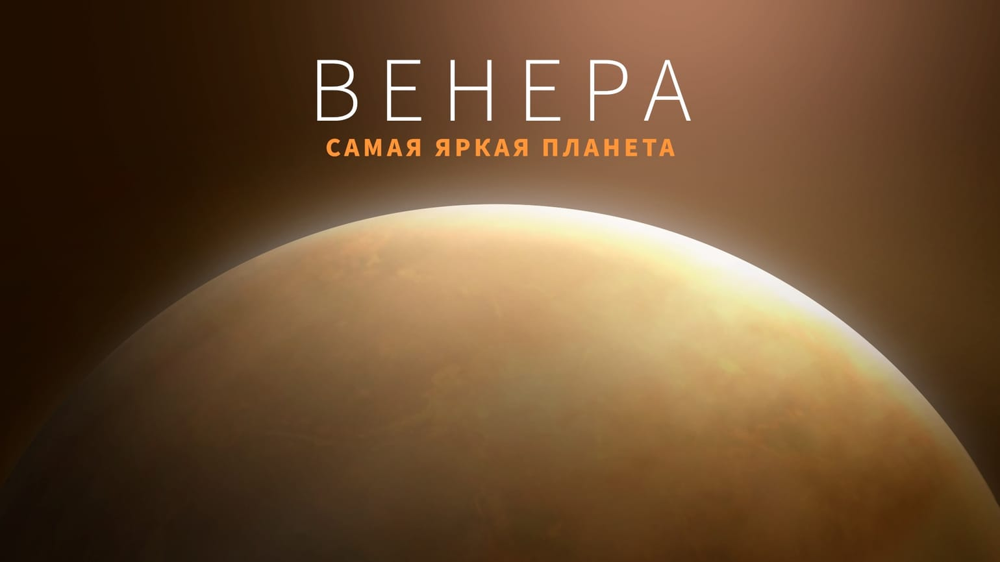

02. Венера
Вторая по удалённости от Солнца и шестая по размерам планета Солнечной системы.

Венеру часто называют «Утренней звездой» или «Близнецом Земли» из-за схожих размеров, массы и состава. У Венеры невероятно плотная атмосфера, состоящая в основном из углекислого газа, которая окутывает планету густыми облаками из серной кислоты.
Исследования показывают, что из-за мощнейшего парникового эффекта Венера является самой горячей планетой в Солнечной системе. На её поверхности царит экстремальное давление, а ландшафт покрыт тысячами древних вулканов и обширными лавовыми равнинами.
[ ФАКТ ]: На Венере Солнце встает на западе и садится на востоке. Планета вращается вокруг своей оси в обратную сторону по сравнению с большинством других планет Солнечной системы, причем делает это настолько медленно, что венерианские сутки длятся дольше, чем венерианский год.